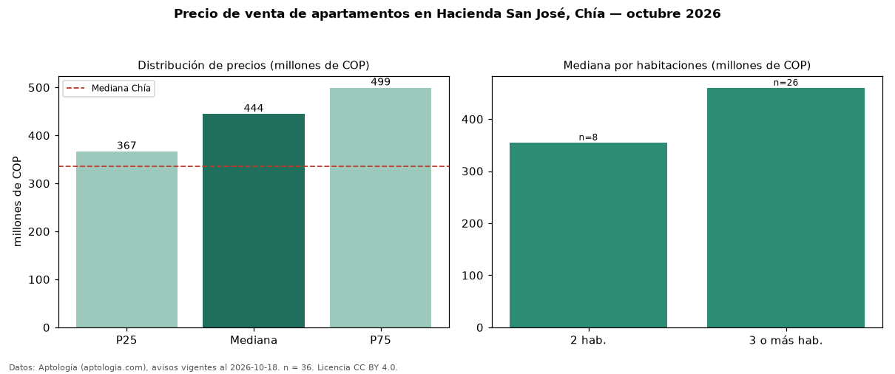

Precio de venta de apartamentos en Hacienda San José, Chía — octubre 2026
Con 36 avisos vigentes, el precio mediano de apartamentos en venta en Hacienda San José, Chía es COP 444 millones. Frente a la mediana de Chía para apartamentos (COP 335 millones), queda 33 % por encima. Por metro cuadrado, la mediana es COP 5,81 millones/m² (n = 36 avisos con área), 5 % por encima de Chía (COP 5,53 millones/m²). Por precio mediano es el puesto 1 de 8 barrios de Chía con al menos 30 avisos de apartamentos en venta (COP): entre las más caras. El área mediana anunciada es 75 m². El segmento con más oferta es el de 3 o más habitaciones (26 avisos, mediana COP 460 millones); pasar de 2 habitaciones a 3 o más habitaciones cambia la mediana +30 %. La administración mediana declarada es COP 380.000 al mes (n = 33). El estrato más frecuente es 4 (79 % de los avisos con estrato). Datos: Aptología (aptologia.com), CC BY 4.0 — https://www.aptologia.com/venta/chia/hacienda-san-jose. Archivos: PDF, CSV con las cifras y gráfica PNG.

| Avisos únicos | 36 |
|---|---|
| Percentil 25 | COP 366.750.000 |
| Mediana | COP 444.500.000 |
| Percentil 75 | COP 499.225.000 |
| Mediana por m² | COP 5.810.321 |
Fuente: avisos vigentes de portales inmobiliarios recopilados por Aptología, deduplicados (mínimo 30 avisos únicos por celda). Precios pedidos, no cerrados. Fecha: 2026-10-18.